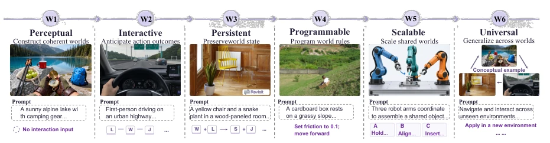
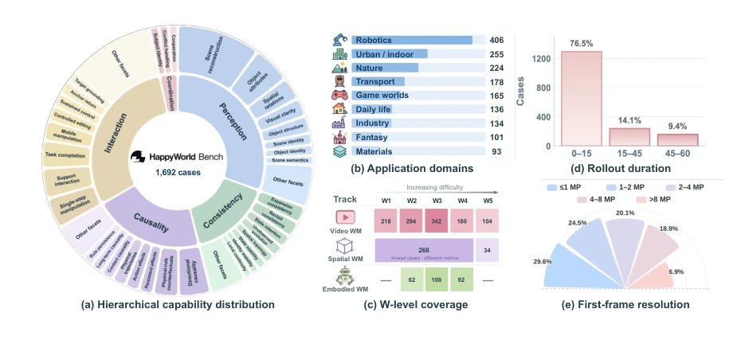
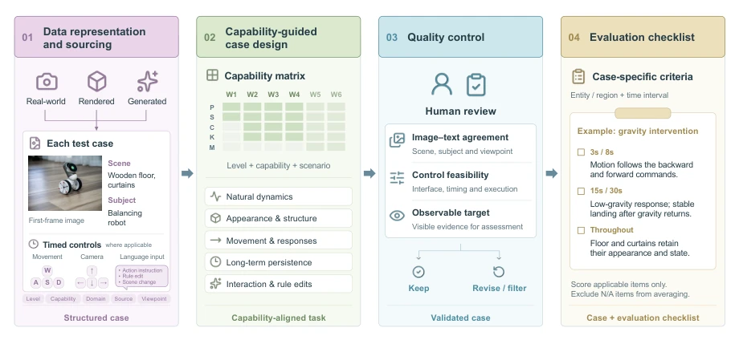
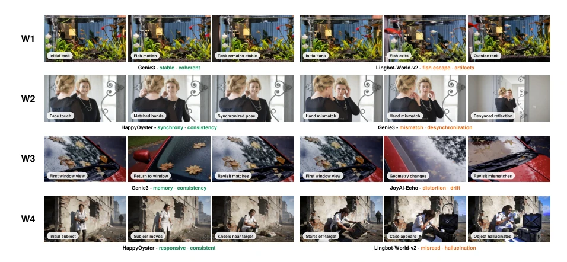
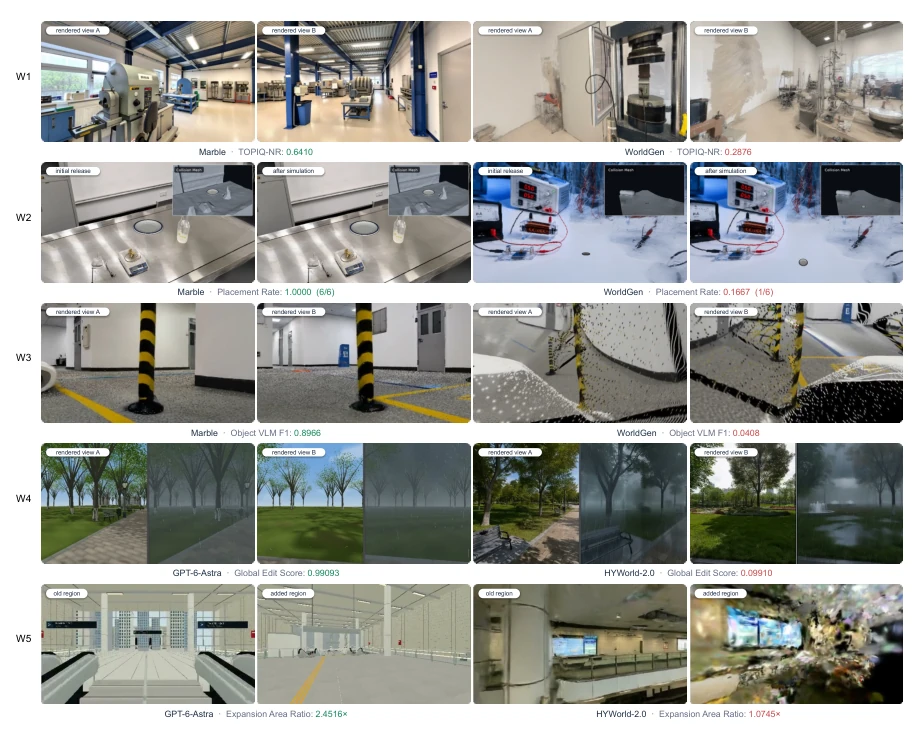
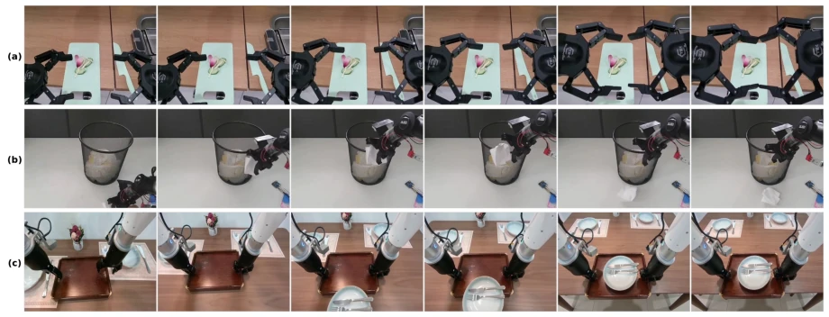
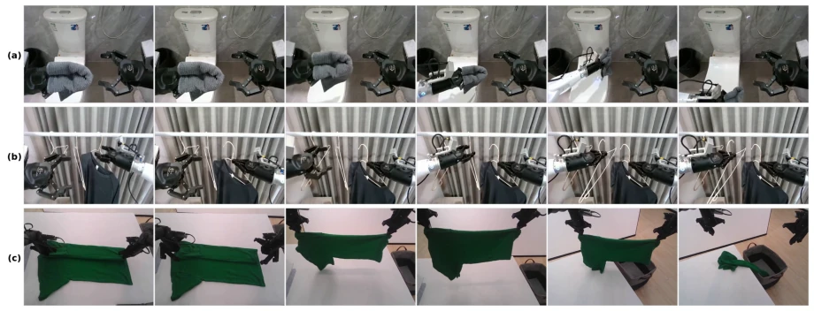
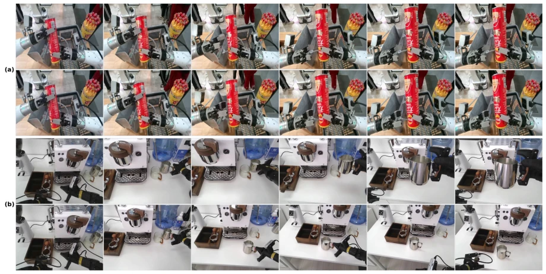

Zhiqi Bai, Junai Cai, Yixin Chen, Jingrun Du, Tao Feng, Wei Gong abspdf
论文点评Review
这篇论文给世界模型界泼了盆冷水。HappyWorld-Bench 试图用 W1-W6 的层级框架统一视频、空间和具身模型的评估，野心不小。但结果很骨感：哪怕是 Arena Elo 第一的 HappyOyster，在状态持久性和规则可编程性上也没好到哪去。作者们很聪明地引入了人类 A/B 对比和自动化指标结合，但本质上还是在验证“生成质量不等于世界可靠性”这个老生常谈。对于 Embodied AI 来说，这更像是一次集体体检，发现大家连“多步动作状态保持”这种基本功都还没练好。不过，能把视频、空间、具身放在一个框架下对比，确实比现在各自为战的 benchmark 强点，至少让社区有了统一的“黑话”。
This paper dealt a sobering blow to the world model community. HappyWorld-Bench attempts to unify the evaluation of video, spatial, and embodied models using the W1-W6 hierarchical framework, showing considerable ambition. However, the results are stark: even HappyOyster, ranked first in Arena Elo, is not much better in terms of state persistence and rule programmability. The authors cleverly introduced a combination of human A/B comparison and automated metrics, but essentially they are still verifying the well-worn notion that "generation quality does not equal world reliability." For Embodied AI, this is more like a collective health check, revealing that everyone hasn't even mastered basic skills like "multi-step action state maintenance." However, being able to compare video, spatial, and embodied models within a single framework is indeed better than the current fragmented benchmarks, at least providing the community with a unified "terminology".
研究动机Motivation
世界模型的核心假设是智能体能内部模拟未来，但这前提是模拟世界必须可靠（Ha and Schmidhuber, 2018）。现有 benchmark 大多只关注视觉质量或单一能力，如视频生成关注连贯性（Zheng et al., 2025），具身关注动作跟随（Xu et al., 2026a），缺乏统一框架。这导致一个视频模型可能画面精美但物体身份丢失，空间模型场景完整但无法导航。作者指出，缺乏统一评估使得难以判断系统是否支持可靠的世界建模（Duan et al., 2025）。因此，需要评估生成世界在探索、交互和修改下的可靠性，而不仅仅是表面生成质量。
The core assumption of world models is that agents can internally simulate the future, but this premise requires the simulated world to be reliable (Ha and Schmidhuber, 2018). Existing benchmarks mostly focus only on visual quality or single capabilities, such as video generation focusing on coherence (Zheng et al., 2025), embodied focusing on action following (Xu et al., 2026a), lacking a unified framework. This leads to a situation where a video model may have exquisite visuals but lose object identity, while a spatial model has a complete scene but cannot navigate. The authors point out that the lack of unified evaluation makes it difficult to judge whether a system supports reliable world modeling (Duan et al., 2025). Therefore, it is necessary to evaluate the reliability of the generated world under exploration, interaction, and modification, not just surface generation quality.
The overall process is based on the W1-W6 hierarchical framework, covering from perception to general world modeling. W1 Perception Construction, W2 Interaction Simulation, W3 Persistent Memory, W4 Rule Programming, W5 Multi-agent Extension, W6 General World. Data construction is divided into three steps: data source and representation, capability-guided case design, and quality control. Cases cover natural dynamics, appearance structure, motion response, etc. Evaluation is divided into three Tracks: Video WM (testing spatio-temporal coherence), Spatial WM (testing physical manipulation), Embodied WM (testing action prediction). Each Track shares the W1-W6 classification but focuses differently. Evaluation combines HappyWorld-Arena (human A/B comparison for Elo scores) and automated metrics (such as Geometric Consistency GC, Physical Causality PC). Video Track uses 1138 prompts, Spatial uses 300 scenes, Embodied uses 254 test cases. Data includes a mix of real images and rendered environments, with control sequences customized by W level. Automated metrics include MUSIQ, HPSv3, DA3 reprojection, etc., ensuring objective behavioral correctness.
Evaluated 14 video models, 9 spatial systems, and 8 embodied candidates. HappyOyster achieved the highest Elo (1263), followed by Genie 3. However, capability-level evaluation shows that even the strongest models still have significant gaps in W3 (persistence) and W4 (programmability). Video models show consistency decline in long rollouts; spatial models' placement accuracy maxes at only 70.14%; embodied models struggle to maintain state in multi-step actions. Results reveal huge gaps in current models regarding interaction simulation, state persistence, and programmable dynamics, proving that visual quality alone is insufficient to support reliable world understanding.
其他图片Other Figures

Figure 1: World levels of HappyWorld-Bench.

Figure 2: Data statistics of HappyWorld-Bench.

Figure 3: Data pipeline of HappyWorld-Bench.

Figure 4: Qualitative examples of video world models in HappyWorld-Bench.

Figure 6: Qualitative examples of spatial world models in HappyWorld-Bench.

Figure 7: Representative W2 failure rollouts; each row pairs one action prompt with six key frames of the corresponding generated video. (a) Prescribed contact never established. Prompt: both grippers grasp the side edges of the cutting board and lift it vertically while keeping it level. Generated: the grippers repeatedly open and close in the air beside the board without ever grasping its side edges, and the board never leaves the table. (b) Interaction misdirected to an unintended object. Prompt: the right gripper grasps the crumpled paper inside the mesh bin on the floor and lifts it out of the bin. Generated: the gripper instead grasps a tissue lying on the floor beside the bin, lifts it above the bin, and releases it back onto the floor, while the prescribed paper never leaves the bi

Figure 8: Representative W3 failure rollouts; each row pairs one action prompt with six key frames of the corresponding generated video. (a) Initial state never established. Prompt: open the toilet lid, grasp the towel, wipe the seat back and forth, and place the towel aside. Generated: the lid is never opened; the left arm nevertheless grasps the towel and performs the wiping motion over the closed lid, and the rollout ends with the towel still held rather than placed aside. (b) Intermediate state never transferred. Prompt: take the hanger with the shirt off the rod, translate it to the empty rod position on the left, and re-hang it before releasing. Generated: the right gripper takes the shirt hanger off the rod but keeps holding it instead of translating it to the empty rod position on

Figure 9: Representative W4 failure pairs from a shared initial state; each pair shows the two rollouts of one matched group under its two prescribed conditions, an edited action condition or an edited physical rule, with the upper and lower rows corresponding to the two conditions in the order stated. (a) Edited physical rule without observable consequence. Prompt: both rollouts grasp and lift the can, and the lower one additionally prescribes a soft-rubber material. Generated: both rollouts lift the can with identical rigid deformation, so the changed material rule leaves no trace in the dynamics and the pair remains visually indistinguishable. (b) Imprecise realization of the edited action condition. Prompt: the upper rollout is prescribed to grasp the silver milk pitcher at the right o